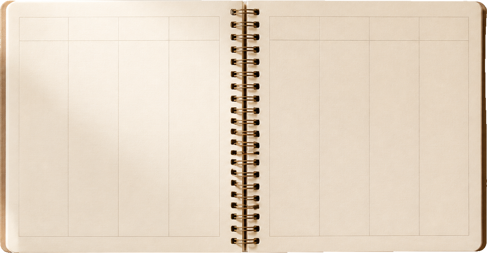

If you’re watching
this video, it’s
because you’ve seen
our email.
Sean Canela
8:12 AM
any plans for the program this spring?
Hey, this is my
4th
email about this, so I’ll keep it short.
So your next quarter is
probably already
half-planned.

WK 1
WK 2
WK 3
WK 4
WK 5
WK 6
WK 7
WK 8
fix open rates
another course push
next YouTube batch
rewrite the sales page again
finally start the community
test a low‑ticket offer
So your next quarter is
probably already
half-planned.
your
3-day
event?
We emailed you about
the launch
you aren’t
running yet.
Three
things:
1
2
3